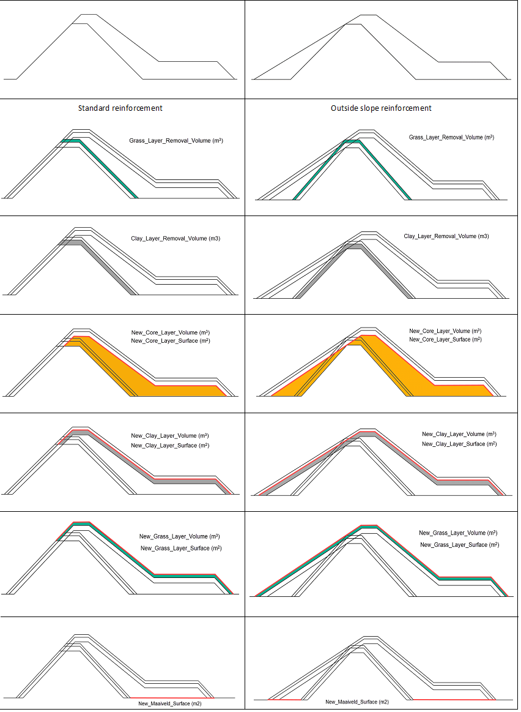
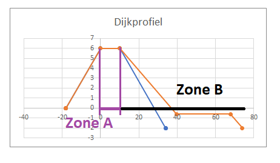
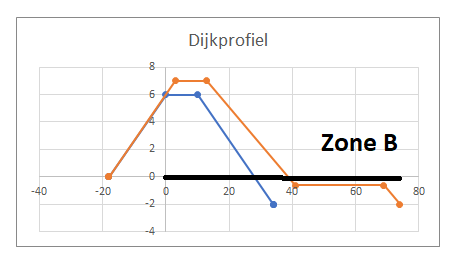

Cost report¶
A Koswat report is divided in different parts:
- Summary report: A summary containing all 'location reports'.
- Location report: Which profile reinforcements can be applied to each location based on their surroundings and reinforcement properties (
MultiLocationProfileCostReport). - Infrastructure report: (
InfrastructureLocationProfileCostReport) Costs related to applying all calculated reinforcement profiles at the locations where infrastructures are present. - Profile report: (
ProfileCostReport), what are the (material) volume costs associated when applying a given reinforced profile . - Layer report: A sub report of the 'profile report' which breaks down the different costs of each one of the layers. This can be seen in Image 1 Volume costs.
|  |
|---|
| Image 1. Volume costs |
Infrastructure report¶
When determining the costs of infrastructures we look mainly at:
- The reinforcement profile (
ReinforcementProfileProtocol) zones A and B. - The distance between a dike and an infrastructure (
SurroundingsInfrastructure.points,PointSurroundings.surroundings_matrix).
These characteristics are then used to estimate how much surface of the infrastructures will be affected by the reinforced profile and therefore their associated cost.
Reinforcement profile zones¶
A reinforced profile can be different from its original state in many ways, however here we are only intestered in two things:
- The new profile's width from the original waterside crest point.
- Whether there is a crest's height increase (
dh0),
By using the old and the reinforced profile's geometries, we can determine what we call zone A and zone B, A + B = {profile's width from waterside crest point}.
- Zone
Arepresents the width of the dike old profile's crest (highest surface). - Zone
Bthe distance between said crest and the end of the dike's reinforcement.
|  |
|---|
Image 1. Reinforcement with dh0 = 0 |
However, when the crest's height of a ReinforcementProfileProtocol has increased in comparison to its original profile (ReinforcementProfileProtocol.old_profile, KoswatProfileProtocol) then we set zone A = 0 and therefore B = {profile's width from waterside crest point}.
|  |
|---|
Image 2. Reinforcement with dh0 = 1 |
Infrastructure's distances¶
An infrastructure (SurroundingsInfrastructure) can be present at different locations (SurroundingsInfrastructure.points). Each of these locations (PointSurroundings) contains a dictionary (surroundings_matrix: dict[float, float]) where the key is the distance between said location and the infrastructure and the values represent the length of the infrastructure found at that distance.
For instance, we could have surroundings_matrix = {5: 1.5, 10: 0, 15: 2.5}, which means:
- Between 0 and 5 meters from the location we will find 1.5 meters of the infrastructure,
- Between 5 and 10 meters from the location we will find 0 meters of the infrastructure,
- Between 10 and 15 meters from the location we will find 2.5 meters of the infrastructure.
In addition, each infrastructure has a fixed width (SurroundingsInfrastructure.infrastructure_width), which can later be used to calculate the total surface of said infrastructure affected by the given profile. So: affected_infra_zone_x = meters_of_infrastructure_in_zone_x * infrastructure_width, where meters_of_infrastructure_in_zone_x are the values calculated from the surroundings_matrix and infrastructure_width is the infrastructure fixed width.
Cost calculation¶
After defining the profile's zones A and B we can easily find how much of each infrastructures is affected by checking the surroundings_matrix indices and "rounding" up. It is agreed that at the overlapping points between A and B, the affected surface, and therefore costs, will only be computed for zone A; this is done regardless of the chosen infrastructure costs type (InfraCostsEnum).
Once the total area is known, we only need to multiply them by their related costs for adding and/or removing infrastructure's material.
Example¶
Using as example the previous surroundings_matrix = {5: 1.5, 10: 0, 15: 2.5} we can demostrate this when A = 4 and B = 10.
- Estimate zone limits:
zone_agoes from 0 to 4,zone_bgoes from 4 to 14.
- Estimate affected points in the surroundings matrix:
zone_aaffects only up until key5, so 1.5 meters of infrastructure.zone_baffects keys10and15, so 2.5 meters of infrastructure.- Note that we do not take
5as has already been considered forzone_a.
- Note that we do not take
Generated files¶
After running a Koswat analysis, several files and directories will be generated. Usually the structure will be as follows:
Dike profile section scenarios -> Scenario -> Generated files
- Dike profile - scenarios directory: Each dike can be run using different scenarios.
- Scenario: Scenario being applied to the selected dike profile.
- Dike section: The selected dike section being analyzed.
- Generated files: A combination of images and a 'csv' matrix result.
- Images: Visual description of each of the possible reinforcements being applied.
summary_costs.csv: A csv file containing all the costs information of the summary.- Represents the Summary, Profile and Layer report.
summary_locations.csv: A csv file containing per-location a breakdown of available reinforcements and selected reinforcement ( see strategies).- Represents the Location report.
/summary_locationsdirectory: contains the following.shpfiles (and their related binaries): -summary_locations_measures: The same data as present insummary_locations.csvis used to shape the geometry of a dike's traject. We keep as well the type of chosen reinforcement.summary_locations_new: an overlay ofsummary_locations_measureswith the geometry buffered in relation to the new selected reinforcement.summary_locations_old: an overlay ofsummary_locations_measureswith the geometry buffered in relation to the original selected reinforcement.summary_locations_step: an overlay ofsummary_locations_measureswith the geometry buffered in relation to the Ordered Strategy step.
summary_infrastructure_costs.csv: A csv file contaning all the infrastructure costs at each location for each of the supported reinforcement profile types.- Represents the Infrastructure Report.
Example using a summarized view of the output tree directory when running the acceptance test test_main.test_given_valid_input_succeeds:
acceptance
| koswat.log
|
+-- results_output
| +-- dike_10-1-1-A-1-A
| | +-- scenario_scenario1
| | | | Grondmaatregel_profiel.png
| | | | Kistdam.png
| | | | Kwelscherm.png
| | | | summary_costs.csv
| | | | summary_locations.csv
| | | | summary_infrastructure_costs.csv
| | | | Stabiliteitswand.png
| | | | Verticale_piping_oplossing.png
| | | |
| | | +-- summary_locations
| | | | summary_locations_measures.cpg
| | | | summary_locations_measures.dbf
| | | | summary_locations_measures.prj
| | | | summary_locations_measures.shp
| | | | summary_locations_measures.shx
| | | | summary_locations_new.cpg
| | | | summary_locations_new.dbf
| | | | summary_locations_new.prj
| | | | summary_locations_new.shp
| | | | summary_locations_new.shx
| | | | summary_locations_old.cpg
| | | | summary_locations_old.dbf
| | | | summary_locations_old.prj
| | | | summary_locations_old.shp
| | | | summary_locations_step.shx
| | | | summary_locations_step.cpg
| | | | summary_locations_step.dbf
| | | | summary_locations_step.prj
| | | | summary_locations_step.shp
| | | | summary_locations_step.shx
| | | +-- Grondmaatregel_profiel
| | | | added_Grondmaatregel_profiel_CLAY.png
| | | | added_Grondmaatregel_profiel_GRASS.png
| | | | added_Grondmaatregel_profiel_SAND.png
| | | | removed_Grondmaatregel_profiel_CLAY.png
| | | | removed_Grondmaatregel_profiel_GRASS.png
| | | +-- Kistdam
| | | | ...
| | |
| | | +-- Kwelscherm
| | | | ...
| | |
| | | +-- Stabiliteitswand
| | | | ...
| | |
| | | +-- Verticale_piping_oplossing
| | | | ...
| | |
| | +-- scenario_scenario2
| | | ...